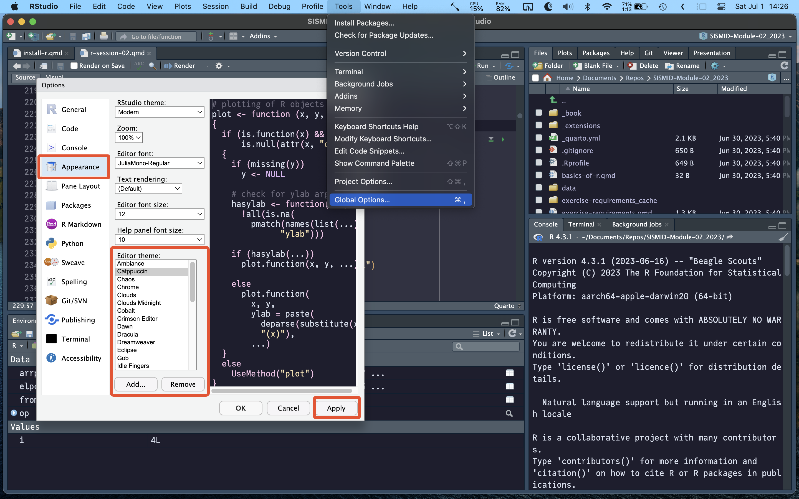
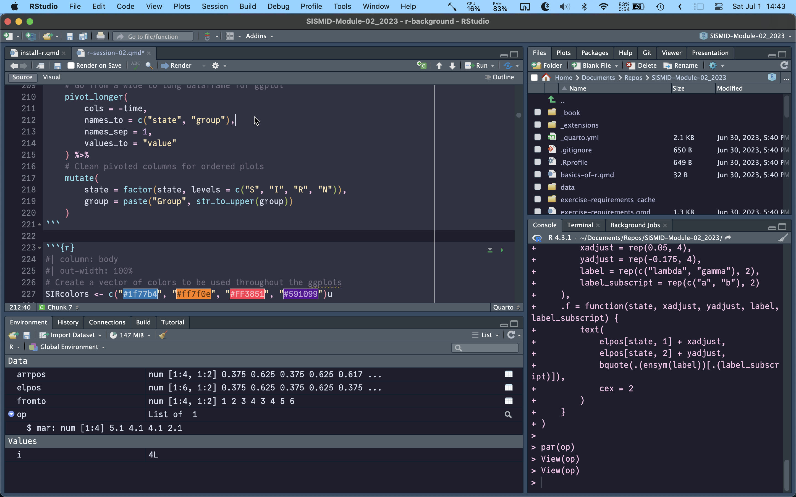
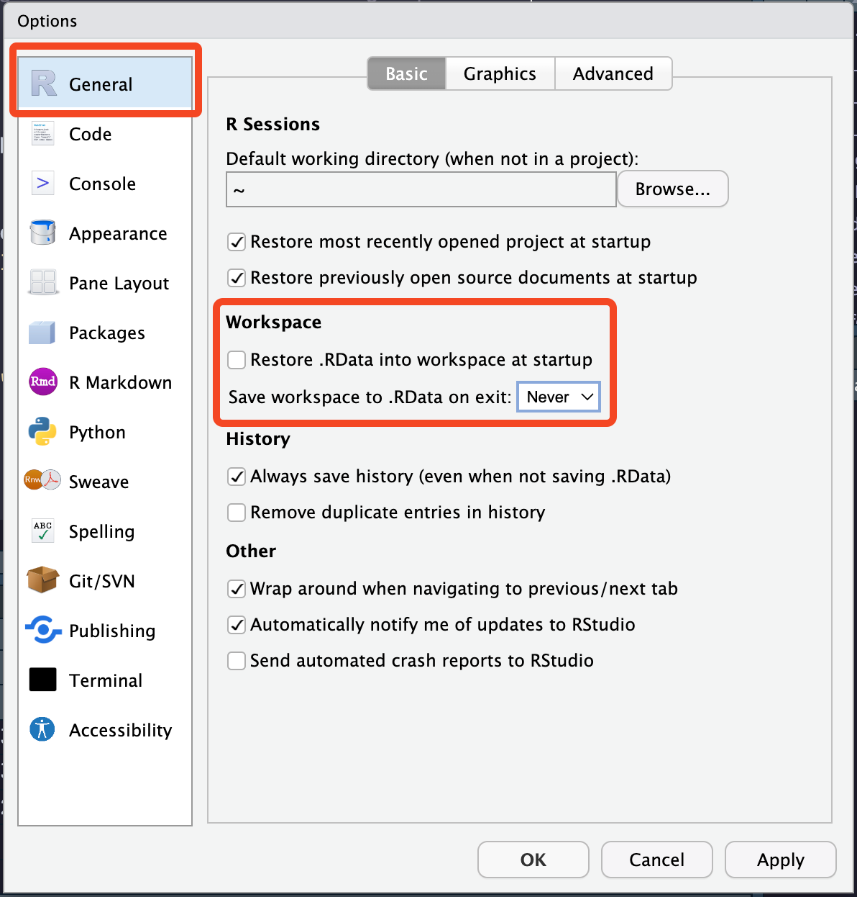

Install and Setup R & RStudio
![]()
R
To start using R, you first need to install it, as it does not come bundled with your computer. The easiest way to do this is to visit CRAN and click on the link for your operating system (there are versions for Windows, Mac, and Linux).
CRAN (Comprehensive R Archive Network) is a network of servers around the world that store identical, up-to-date, versions of code and documentation for R. This is where we will download R from, but also all the packages that we will use in this course. When you first try to install a package, you will be prompted to select your CRAN mirror. You can select any mirror, but it is best to choose one that is close to your location, as this will make the download faster.
You could also use a small application called {rig} to install R. {rig} is a small cross-platform application (i.e. works on Windows, Mac, and Linux) that downloads and installs R for you. While this may seem pointless to install an application to install R, it is actually quite useful as it makes it far easier to download and install multiple versions or R. As R is updated, bugs are fixed and new exciting packages do not support older versions of R, you will eventually need to update your installation. This is normally a massive pain due to the way R and the associated packages are installed on your computer. {rig} makes this process much easier (although you still shouldn’t upgrade R versions mid-project unless you are OK losing a couple of hours getting set up again).
RStudio
Installation
R is the programming language, but we need a way of interacting with R. We can do it directly by typing R into the terminal/command prompt, but this will give us a very pared down experience that is missing many of the essential features that make our development experience much more productive (as well as more enjoyable). For that, we want to install a Graphical User Interface (GUI), or more specifically, an Interactive Development Environment. The most suitable one for most R users is RStudio. RStudio is an easy-to-use IDE that allows us to write scripts (so we can save our analysis and rerun it easily, without needing to re-type it all), use the R console to check things quickly, provides a plotting window to easily manipulate and visualize the data, as well as an environment viewer to quickly understand what packages we have loaded and objects we have created.
To download RStudio, simply visit this link, which should provide you with a button to download the appropriate version for your operating system (there is also the full list of versions below the download button, in case it doesn’t recognize your OS correctly).
Setup
Once you’ve installed RStudio, you can get going straight away - that’s the beauty of it. However, spending a few minutes getting accustomed and adjusting the layout will make your development a little smoother.
Theme
The first thing that’s worth doing is adding a theme - the default white background can be a little harsh when you spend a long time staring at code. Open up the global preferences (ctrl/cmd + ,), go to “Appearance > Editor theme”, and select a theme that works for you. The “Cobalt” theme is usually a nice default that work for many. Here, Callum is using the “Catppuccin” theme, that can be downloaded from here, and installed by clicking on “Add” at the “Appearance” screen.

Pane layout
The next RStudio thing that you may want to customize is the default layout. In the “Pane Layout” section of the global preferences, you can determine what you want to show in each quadrant of RStudio. The default layout will show you all the necessary parts, but most of the time you will be using the “Source” section, as this is where you write your scripts, and the “Environment” panel, which is where you can see what objects have been created, as well as exploring their properties e.g., columns names in a dataframe. For this reason, you may like to place the “Environment” panel under the “Source” panel, so they take up the majority of your screen, and the “Files/Plots/Help” and “Console/Terminal” panels are off to the side as you will interact with them less.


RData
The final thing to do, that’s actually quite important, is to turn off the “Restore .RData into workspace at startup”. The reason being, if you do not, objects from previous sessions will be loaded into your new working environment, putting things where they shouldn’t be, making it very difficult to catch bugs as your code may reference something that doesn’t exist by that point in your script as it is created later on, but you wouldn’t catch that mistake as it was loaded into your environment on startup.
